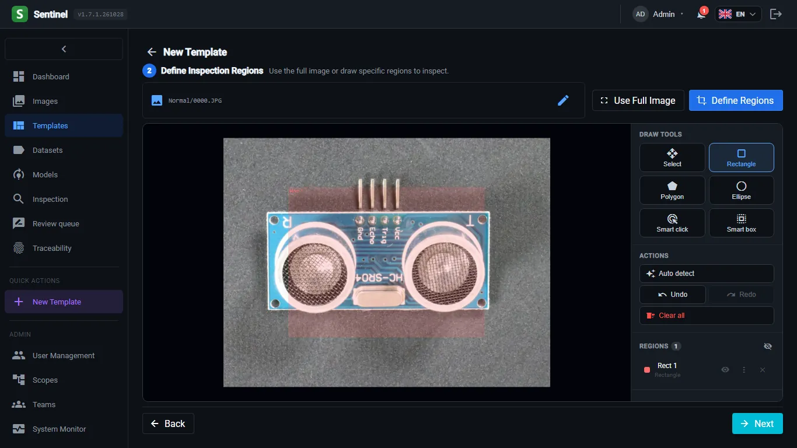
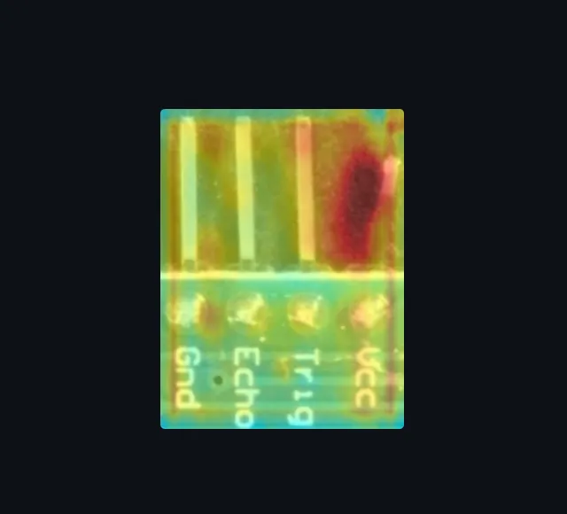

Ipari AILarix Technologiesv1.7.6
Sentinel
On-premise vizuális minőségellenőrző platform gyártósorokra: NYÁK-ok, forrasztások, csatlakozók, hiányzó alkatrészek. A mérnök egy „golden” képen bejelöli a vizsgálandó régiókat, a rendszer ORB + homográfia alapon igazítja a képeket, adathalmazt épít, GPU-sorban modellt tanít, majd kötegelt, ütemezett vagy figyelt mappás ellenőrzést futtat. Az operátor által átnézett eredmények visszakerülnek a tanításba, így a modell folyamatosan javul.
Hibakereső motorok: osztályozó, PatchCore és EfficientAD anomáliadetektálás (csak jó képekből tanul, hőtérképet ad), YOLOv8, CLIP zero-shot. REST API MES/SCADA/PLC integrációhoz, aláírt gépre kötött licencelés, Windows telepítő és Linux csomag.
82–95%hiba megtalálva a képek ~10%-ának átnézésével (VisA PCB)
3 760backend teszt, 117 Playwright E2E
2 000+commit 8 hónap alatt
PythonFastAPIPyTorchYOLOv8OpenCVAngular 17Ed25519

